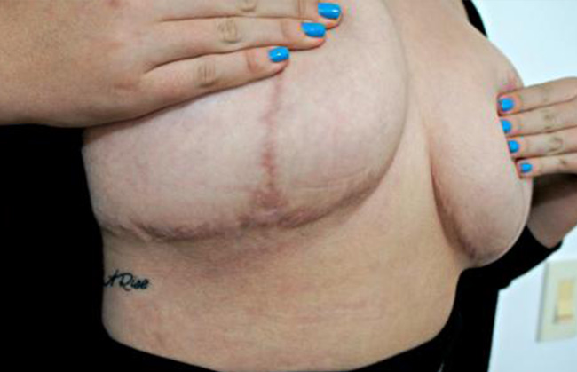

Un anno fa, era infelice
Ho ingrandito il seno senza chirurgia!
A proposito di ciò che condividerò con te ora, i miei parenti, i miei cari e anche il mio giovane. Non ho nulla di cui vergognarmi, così come niente da aspettarmi con apprensione dell'inattesa reazione di qualcuno. Circa un anno fa, sembravo completamente diverso. Ho ingrandito il mio seno a 19 anni, ma non indovinerete mai in che modo! Capsule Breast 4+ al vostro servizio, ragazze!
Ora sono orgoglioso della mia taglia - B, sforzandomi per C - ma per tutta la vita sono stato "tormentato" con una misera taglia A. Qualsiasi positivista del corpo può lanciarmi pietre, ma saremo onesti l'uno con l'altro e con noi stessi i seni piccoli, come quelli troppo grandi, sono per amante. E non ci sono così tanti amanti, come si è scoperto. Ne ho conosciuti pochissimi, almeno.
Cosa ho sperimentato a scuola?
Tutti i miei complessi hanno cominciato a svilupparsi a scuola, perché i bambini sono ancora creature crudeli. Era un topo grigio, anche se avevo amicizia con molte ragazze della mia classe. Solo che nessuno li ha toccati, non ha cercato di offendere, non ha fatto piangere ogni giorno. Nel corso del tempo, una sedia macchiata di gesso o detriti nello zaino si sono trasformati in bullismo e umiliazione sull'aspetto. Qual è stata la prima cosa che ha attirato la mia attenzione? Il contrasto tra le forme arrotondate di tutti i miei compagni di classe e la mia figura di una ragazza di 12 anni senza evidenti segni di maturazione. E se almeno una volta hai dimostrato che qualcosa ti fa male, la gente farà costantemente pressione sul "punto dolente".
Cos'ho passato? Il mio nome è stato travolto, trasformato in maschio. Mi hanno offerto di tagliare i capelli per sembrare più armonioso con il mio fisico "ragazzino". Dicevano che ero solo per le ragazze, perché Che tipo di ragazzo normale mi avrebbe incontrato. Senza il classico " è un seno? ci brufoli alcuni sottosviluppati"
Il seno piccolo è un grosso problema
È successo quando ho finito il 3 ° corso. Quindi non ero più un topo grigio, ma i "divertenti" giorni di scuola lasciati dietro un sedimento. Ho avuto un sacco di complessi e costante cavilli sul mio aspetto da quei tempi.
Pertanto, non mi è davvero piaciuto attirare l'attenzione su di me, che ha funzionato benissimo a causa delle dimensioni del mio seno.
Penso che ora molte ragazze con questo problema mi capiranno. Camicette eleganti con tagli profondi non mi andavano bene.
Ho avuto un sacco di complessi e costante cavilli sul mio aspetto da quei tempi.
L'attenzione dei ragazzi è stata attirata dalla mia amica procace, anche se avevo un aspetto eccezionale. Quindi non sapeva dell'esistenza delle capsule per l'ingrandimento del seno Breast 4+ e non pensava che ci fosse un'alternativa efficace alla chirurgia. Periodicamente, sono diventato depressa. Ho pensato alla mia solitudine eterna e ho rimproverato la cattiva genetica in questo.
Party? Mai nella mia vita!
Tornando all'evento, grazie al quale ci siamo tutti riuniti qui. La migliore festa dell'anno era in programma. Un'altra festa in cui non avrei partecipato affatto. Ma. Le amiche sono riuscite a convincermi, dicono, che feste così fantastiche non si possono perdere. Il tempo degli studenti è divertente! E madre con il suo eterno "non incontrerai nessuno se rimani nell'ostello e morirai da sola". Non so ancora se ha detto seriamente "muori da sola". Questa volta non era divertente. In generale, mi hanno spinto con i loro argomenti, e ho accettata.
Il ragazzo dell'amica ci ha portato in una casa di campagna a due piani e ha promesso di venirci a prendere all'ora concordata. Ho dovuto anticipare che avrei voluto andarmene molto prima, concordare un altro trasporto. D'altra parte, allora non avrei incontrato Massimo e non avrei cambiato radicalmente la mia vita. Tutto per il meglio :)
Non ero a mio agio
Miomi sono vestita abbastanza discretamente. Tuta di jeans, top a pois bianco e nero e sneaker bianche. Non ho provato a distinguermi, ricordi? Nessuno mi ha notato dietro gli abiti schietti delle altre ragazze, il loro trucco luminoso e quello che hanno fatto sulla pista da ballo. Tutti come uno. Ho già pensato "per rimanere qui fino alla fine, devi bere qualcosa" e sono andata alla ricerca di alcolici.
Prendendo un bicchiere di vino, sono andata a guardarmi intorno e cercare le mie amiche. Ma non si vedevano da nessuna parte. Apparentemente, molto prima hanno trovato cosa bere e con chi. Non aveva altra scelta che allontanarmi dal tavolo dell'alcool e dalla pista da ballo improvvisata, dove la musica suonava troppo forte.
Mi sono seduta in un gazebo e ho bevuto da sola.
Conveniente nelle case di campagna è che di solito c'è un territorio molto ampio. Come capisci, sono andato lontano dalla folla inebriata e dalle coppie aggrappate agli angoli. Mi sono seduta in un gazebo e ho bevuto da sola. Sì, mi posso divertire alle feste. La cosa più offensiva è che non c'era possibilità di tornare a casa.Si arrabbiò con le amiche più che mai: "non volevo andare! Perche ' dovrei convincermi? Per lasciarmi in quel modo in mezzo a un gruppo di sconosciuti ubriachi?" E ho detto a me stessa una stupida anche una dozzina di volte, ho dovuto pensare con la testa.
La svolta inaspettata della festa
Il bicchiere di vino era vuoto, ma non ho notato come ho bevuto tutto. Una voce maschile sorpresa mi portò fuori da uno stato riflessivo:
Anch'io sono stato sorpresa, ma ho potuto chiaramente rispondere, anche se il vino mi ha inebriato un po ':
- Qui solo io, conti, non c'è nessuno. Ora me ne vado, puoi sistemarti. - Dai, non mi disturbi.E dopo un secondo di silenzio:
- Il bicchiere è vuoto. - Cosa? - Il tuo bicchiere è vuoto. Qualcosa da portare? - Si', grazie, vino biancoSe n'e ' andato e io sono rimasta seduta nella penombra e ho pensato che fosse appena successo. E perche ' non me ne sono andata subito, ma ho deciso di restare con lui. E bere.
"Happy End non era destinato ad essere".
Quando tornò, finalmente ci siamo conosciuti normalmente. Si presentò come Massimo e disse che Eugenia è un nome molto bello. Parlammo per ore senza fermarsi: dell'università e degli insegnanti (si è scoperto che stava studiando nello stesso corso, solo in una facoltà diversa), della musica, dei film, dell'antipatia per le feste e di come gli amici sono riusciti a trascinare ognuno di noi qui. Non voglio parlare ora di quanto abbiamo in comune. Ci siamo seduti così comodamente durante la festa, separati da tutti.
Sembra una scena di un film romantico, ma il lieto fine non era destinato a esserlo. Ragazze, non vi arrabbiate subito e non smettete di leggere. Ho promesso una storia che ti piacerebbe sicuramente? Manterrò la mia promessa :)
È qui che sono iniziate le stranezze ...
Cominciavamo a vederci più spesso all'università, corrispondevamo molto e dopo le lezioni camminavamo quasi ogni giorno. Ci sono stati giorni in cui aveva cose importanti da fare, ma non ho prestata attenzione a questo: "Non possiamo passare tutto il nostro tempo libero insieme". Ora analizzo il suo comportamento e tutto va a posto. Soprattutto come la sua espressione è cambiata quando ha parlato di quelle "cose importanti da fare". Come scusarsi o vergognarsi di qualcosa. Ma i suoi "affari" rimasero segreti non così a lungo.
Poco più di un mese la nostra comunicazione è continuata. Ci stavamo avvicinando e mi sentivo davvero a disagio per non sapere nulla dei suoi affari importanti. "Oggi ti chiederò di sicuro, se solo provassi a non rispondere sul serio." Ma non ho dovuto chiedere.
Tutto il mistero diventa evidente
Stai aspettando il dramma? Eccola! Ho pranzato nella mensa universitaria e due studentessi più grandi si sono seduti comodamente vicino a me. Non ascolto conversazioni di altre persone, ma dopo le parole "sesso" e "Massimo" in una frase, ho iniziato ad ascoltare. Come un vero paranoico, onestamente, ma non potevo farci niente. Non si sa quanti quanti Massimo camminano per il mondo, mi fido del mio. E poi uno di loro, apparentemente specificando, chiamò il suo cognome.
L'appetito era viziato. Presi lo zaino e corsi fuori, a malapena trattenendomi per non piangere. Che diavolo? Quindi cosa ha fatto ieri "Tesoro, non potremo sicuramente incontrarci domani. Forse sabato? ”
Certo che puoi sabato. Dopo aver scopato i tuoi prossimi "affari"?
Il seno piccolo non mi eccita"
Puoi immaginare l'intera gamma di emozioni che mi ha attraversato: delusione, tristezza, rabbia, autocommiserazione, perplessità. Non volevo vederlo in quel momento (e in effetti MAI più), ma il dolore aumentava. Avevo bisogno di sapere perché mi ha fatto questo. Qualche giorno dopo ho deciso di contattarlo.
Avevo bisogno di sapere perché mi ha fatto questo.
Ero categorica. A quanto pare sperava in una riconciliazione. Era chiaro sul suo viso che dubitava se valesse la pena parlare. Forse sarebbe meglio se non lo dicesse.
- Si', non ho cercato di venire a letto con te. Sì, ho fatto sesso con gli altri. Ma non c'era niente di speciale in questo! Nessun legame, capisci?E ' serio adesso? Cosa avrei dovuto capire?!
- Perché l'hai fatto allora? Nessuna connessioneUn'ombra di dubbio. Di nuovo.
- Avevo bisogno di mettere questa tensione da qualche parte. Mi piaci davvero. Non c'è bisogno di sembrare così biasimevole! Se lo guardi dall'altra parte, non è colpa mia. - Qual è l'altra parte, Massimo? - Il seno piccolo non mi eccita.L'ha detto in un secondo, e mi sembrò di essere inchiodato al pavimento. Di nuovo, il problema è nel piccolo seno. Il mondo si è unito a questo, o come? Perché il mio seno rovina costantemente tutto per me ?!
Un momento di auto-scavo
Me ne sono andata. Oltre alla rabbia per Massimo, una delusione è cresciuta in me. Da quanto tempo ho cercato di fingere che tutto mi andasse bene, che tutto fosse in ordine. Fintanto che il problema delle piccole dimensioni del mio seno ricadde in modo così impudente sulla mia testa. E forse ha rovinato la mia vita personale.
"Per fortuna le vacanze estive stanno arrivando", ho pensato. Soprattutto non volevo vedere così tante persone ogni giorno. Con così tanti ragazzi che, incontrandomi in corridoio, sembrano voler dare cinque, come il loro vecchio amico. È vero che TUTTI i ragazzi sono così ossessionati dagli sguardi? Mi chiedo, se non fosse per le capsule Breast 4+, soffrirei davvero della solitudine fino alla fine della mia vita? Fortunatamente, non lo sapremo mai :)
Sono quasi diventato paranoico.
Probabilmente non vale la pena spiegarti la mia condizione in quel momento. Molto raramente ho lasciato la mia casa. Se non fosse stato per prove ed esami, non lascerei affatto casa. Ho completamente smesso di applicare il trucco (e per cosa?), Mi sono vestita in modo oversize e ho camminato più scura delle nuvole. È come se l'ultima parte della femminilità in me fosse morta, capisci?
Le ragazze procace mi "inseguivano" ad ogni passo, o ero io che prestavo troppa attenzione a questo. Sembra che tutti abbiano più busto del mio! Davvero, mentre ero seduta nel confino della mia stanza, gli alieni sono arrivati e hanno aumentato il seno di tutte le femmine? O cosa è successo a tutti? Ogni seconda con uno scollo franco e una terza taglia sicura del suo busto, o in abiti attillati con curve morbide di forme. L'auto-rifiuto e l'odio per il proprio aspetto sono cresciuti rapidamente. Non vedevo l'ora di quei due mesi di meritata vacanza da tutto questo.
Il problema di un seno piccolo deve essere risolto!
Continuerei a opprimermi, se non per un paio di shock. Il primo - mi hanno spinto via e hanno quasi buttato giù i loro piedi nel corridoio qualche sophomores con le parole "ragazzo, non metterci sotto i piedi!". Questo non è il peggio. Il secondo, tuttavia, è più duro: ho incontrato quel giorno Massimo. Ed era con una ragazza. A proposito, una ragazza tettona. Volevo cadere attraverso la terra, sparire o annegare nella mia enorme felpa informe. Ma questo non succede.
Qualcosa si è rotto dentro, mi sono davvero arrabbiato! Conosci questa sensazione? Quando vuoi vestirti il più brillantemente possibile, truccati in modo rivoluzionario e vai efficacemente dove molti amici si ritrovano. Solo io volevo un po 'diverso.
La notte successiva non dormivo, stavo pensando ad un aumento del seno. Io stessa non posso fare soldi per l'operazione e i miei genitori non capiranno esattamente questo desiderio. E se improvvisamente avessero capito e dato soldi, la paura mi avrebbe fermato! Ho paura di andare sotto i ferri, non sapendo se tutto andrà bene. Se gli impianti non attecchiranno e causeranno un dolore terribile ... O sembreranno poco attraenti, le cicatrici possono rimanere ...
Ho sentito parlare di esercizi speciali, ma come può influire in qualche modo sulla crescita del seno. Non ci sono prove, ma non voleva perdere tempo con cose stupide.
Notti insonni sui forum ed ECCOLO qui!
Dopo una terza notte insonne, scorrendo attraverso vari forum interessanti e leggendo "confessioni" sul tormento di altre ragazze con il seno piccolo, mi sono imbattuto in una discussione intrigante. Lì, hanno elogiato alcune capsule per l'aumento del seno e hanno condiviso le loro foto prima e dopo il loro utilizzo. La mia mascella è caduta, onestamente. Ho esaminato ogni foto, confrontato il risultato e e già non aveva dubbi: aveva bisogno di queste capsule.
Ho ordinato Breast 4+ IMMEDIATAMENTE.
Arrivato in 3 giorni. Ho pagato quando l'ho ricevuto (il che è molto conveniente, sei d'accordo). Correvo a casa a capofitto per iniziare a usarli in fretta.
Non ho nemmeno pensato di prendere le misure "prima", quindi avevo fretta di iniziare la trasformazione. Dopo aver visto quelle ragazze felici, non avevo dubbi sull'effetto delle capsule.
La mia trasformazione non è avvenuta subito
Il primo mese, lo confesso, non ho visto molti aumenti (non tutto è così veloce, potresti pensare). Dopo un periodo di utilizzo delle capsule Breast 4+ , ho notato che il seno iniziava ad apparire un po 'diverso: o la forma del seno era cambiata in meglio o l'aumento era effettivamente iniziato. Non era ancora chiaro.
Ma ha già iniziato a influenzare il mio umore in quel momento. Sono diventata più sicura e ho buttato via tutti i vestiti noiosi che nascondevano la mia figura. La trasformazione è iniziata con successo, per così dire :)
È tempo di trionfare e costruire un piano di vendetta
Cosa nel tempo? Ho ordinato le capsule all'inizio di maggio, l'ho usate secondo le istruzioni e circa tre mesi dopo (circa all'inizio di agosto) ho notato che il reggiseno sarebbe troppo piccolo. Immagina la gioia che mi ha afferrato?!))) Naturalmente, ho notato cambiamenti graduali: il seno è diventato più seducente, come se fosse riempito di nuova forza e la pelle è diventata più setosa al tatto.
Ho trionfato e sono saltato dalla felicità, perché questa è una vera vittoria! :)
Quanti complessi e bullismo a causa delle dimensioni del seno, quanta sofferenza a causa di questo idiota Massimo! Un mese prima dell'inizio del nuovo anno scolastico, nella mia mente brillante maturò un eccellente piano di vendetta. Sei pronto a scoprire cosa è successo dopo?
Entro settembre, ho dovuto sostituire un altro reggiseno, puoi immaginare? È tutto senza operazioni, con Breast 4+!!! È passato così tanto tempo, ma non mi libererò dallo shock))
Per attuare con successo il mio piano, avevo bisogno di due cose: un elegante set di biancheria intima di pizzo e in nessun caso dovrei imbattermi in Massimo per caso all'università in anticipo. Le stelle erano dalla mia parte, tutto è andato in quel modo.
Ho dovuto chiedere alla mia amica di scoprire il suo numero di telefono (l'ho eliminato in fretta, non pensavo che avrei avuto bisogno di nuovo). Volevo fare tutto in modo spettacolare: ho chiamato e, parlando con un leggero respiro, e in tono di scusa, l'ho invitato a fare una passeggiata conciliante. Ad esempio, non voglio lasciare questo conflitto irrisolto e non sono meno colpevole di ciò che è accaduto (sì, certo). Ha accettato. Forse c'è ancora qualcosa per me, non lo so. Lei e quella ragazza erano sicuramente ancora insieme.
L'incontro tanto atteso.
Quando ci siamo incontrati, non mi ha riconosciuto. Mi sono sentito benissimo e sembrava lo stesso. Ma il suo aspetto ha attirato di più la mia scollatura, come è stato concepito. Da sotto la mia blusa leggera sbirciava tutto ciò che sembrava generalmente decente da sbirciare nei luoghi pubblici. Il ragazzo era incuriosito e mi piaceva seguire la sua reazione.
Ma il suo aspetto ha attirato di più la mia scollatura, come è stato concepito.
Mi stava letteralmente leccando addosso, quasi si avventò proprio lì! E io ho interpretato perfettamente "di sincero" rimpianto per quello che è successo e per la nostra comunicazione interrotta. E improvvisamente mi ha invitato a casa sua! Nel dormitorio, ovviamente, ma non c'era proprio nessuno. Aveva ragione.
Sono diventata più sicura e più pericolosa
Alla soglia, senza chiudere la porta, si precipitò bruscamente con i baci. Inaspettatamente per me stessa, gli ho permesso di farlo. Mi ha toccato come se fossi la sua cosa personale. Si sforzò di togliersi la camicetta, ma l'ho distratto abilmente.
Dirò subito che questo non faceva parte dei miei piani originali. Volevo stuzzicarlo con quanto sono bella adesso. Mostrare ciò che ha perso. Flirtare un po 'e mandarlo via. Anche biancheria intima io ho comprato più per la mia fiducia, non per questo idiota con modi macho.
Questa dichiarazione coraggiosa mi ha allontanato dai miei pensieri. La prima reazione è “cosa sto facendo ?? Non voleva andare a letto con lui!! ” Il secondo pensiero è "non lo farai". Sai come nei cartoni animati un personaggio possa accendere fuochi nei suoi occhi da un'idea insidiosa che mi è venuta in mente? Ho avuto qualcosa del genere)
Non si aspettava un simile inganno da me.
Gli ho permesso di togliersi la camicetta, si è immediatamente eccitato e non ha nemmeno chiesto cosa è successo alla mia taglia 1 durante questa estate. E anche questo mi è stato bene.
Ho lasciato intendere che non ero abbastanza eccitata e avevo bisogno del suo aiuto. Mi serve un compenso per tutti i nervi spesi, vero? Se dire la verità, cunniling... fa molto mediocre, mi sento un po ' dispiaciuto per la sua ragazza in questo momento. Non solo perché il suo ragazzo è un vero stronzo.
Quando ha finito, ha iniziato a togliersi goffamente i pantaloni, le mani gli tremavano di impazienza!)) Sono passati sei mesi e non riesco ancora a smettere di ridere quando me lo ricordo) Avresti visto la sua espressione facciale quando mi sono alzata, mi sono abbottonata i pantaloni e ho detto "grazie, non era che super, ma tirerà su tre"
E poi ho aggiunto, come se avessi martellato l'ultimo chiodo nella sua bara:
E me ne sono andato.
Rimase in piedi, con la bocca aperta di sorpresa. Sono scioccata dai risultati di questo incontro e dalla mia intraprendenza, non ricordo come sono entrato nella mia stanza in un altro dormitorio.
Ho avuto tutto quello che potevo sognare!
Le conclusioni di questa storia si può fare da soli. Aggiungerò semplicemente che, ovviamente, non avevo fotografie. Questa storia l'ho detto solo alle mie amiche, e hanno già deciso di registrare per tutti i nostri comuni amici) Anche a loro è stato spiacevole vedere cjme la loro amica allontanarsi da tutti e chiudersi in se stessa. Senza il loro sostegno in quel periodo, sarei molto più difficile.
Come va? Avete letto fino alla fine? Lo spero molto) dopo tutto, l'Happy End è successo ancora un po ' più tardi! Sono stata così influenzata dai cambiamenti avvenuti grazie alle capsule Breast 4+, che la mia fiducia l'inizio di attirare una folla di ragazzi e anche gli uomini più grandi)
Presto incontrai un ragazzo alla festa. Sì, sì, di nuovo alla festa :) ma è molto diverso! Non voglio correre frasi forti che lui è l'unico per me ed è l'amore per tutta la vita. È solo che ora sono felice e non ho bisogno di alcun cambiamento per piacergli.
Il mio piccolo seno non sarà più un ostacolo!
Cari miei, desidero sinceramente che siate in armonia con voi stessi!
Soprattutto per coloro che, come me, hanno sofferto a causa delle dimensioni del seno, a partire dall'adolescenza. Ho passato tutto questo, ho sentito tutto su di me. Per questo ho scritto questa tenebrosa oscurità delle parole, ho raccontato la mia storia e spero che mi ascolterai. Non andare sotto i ferri, non è sempre sicuro!
Vuoi cambiare te stessa-basta acquista le capsule Breast 4+, abbi un po 'di pazienza e guarda il risultato! E lui sarà, esattamente te lo dico!
P.S. E per i soldi risparmiati sul rifiuto dell'operazione, dopo la trasformazione, rinnova il tuo guardaroba e comprati biancheria intima costosa. Credimi, lo vorrai! :)

Elena
Posted 3 days ago
E ' quello che vuole! HAH, che bello che hai fatto a rovinarlo! Non riesco a trattenere il sorriso:) e le capsule so a chi consiglierò)
Caterina
Posted 3 days ago
La natura mi ha regalato un busto, ma la mia amica si lamenta sempre delle sue dimensioni)) So cosa regalare per il suo compleanno, che sarà tra una settimana ! Ordino subito!
Vittoria
Posted 2 days ago
Ho ordinato a me stessa Breast 4+ due pacchetti contemporaneamente! Penso che non sarà superfluo) Sì, e non chiedono il pagamento anticipato, significa che è sicuro)) Grazie per il consiglio e le rivelazioni!
Eugenia
Posted 2 days ago
Non c'e ' di che! E vi auguro una piacevole trasformazione:) Ricordo le mie premonizioni quando ho appena ricevuto le capsule, e sono molto felice per te!
Alessandra
Posted 2 days ago
Ho avuto una situazione leggermente simile. È un peccato che non abbia pensato alla vendetta almeno in qualche modo. Adesso è troppo tardi per pensarci, le capsule Breast 4+ hanno fatto il loro lavoro! È difficile credere alla parola, è meglio vedere di persona :))
Vincenzo
Posted 17 hours ago
Sono andato per sbaglio alla pagina, incuriosito dalla storia. Questo non dipende dalla solidarietà maschile - il ragazzo è sicuramente uno stronzo. Ma speravo ancora in una sorta di scena erotica, o qualcosa di più luminoso ...
Lara
Posted 15 hours ago
Ho usato questi Breast 4+ per un mese, non ha aiutato affatto!! Perché stai ingannando le persone? Hai fatto la plastica e lo dici qui...che schifo su di te
Eugenia
Posted 13 hours ago
Lara, faresti meglio a leggere le istruzioni! L'azione delle capsule inizia immediatamente, ma il risultato visibile per il mese di utilizzo è una sorta di assurdità. Sii paziente, tutto funzionerà :) Non smettere di prendere e seguire le istruzioni.
Simona
Posted 10 hours ago
Che bello !!! Ora sto parlando di tutto in una volta: la tua storia, un nuovo seno e un vero lieto fine! Quanto leggo il tuo blog, non potrei mai presentarti un mouse grigio)) Ben fatto, che ha deciso di dire!
Elena
Posted 7 hours ago
Con un seno piccolo, tutto è più semplice. Se non ti piace, hai comprato delle capsule, l'hai preso e voilà! Per me con il seno grosso - almeno esegui l'operazione ... Hanno iniziato a deridere a scuola, e ora continua all'università ((
Ti piaceranno anche:
5 motivi per la tua solitudine
Stile di vitaCome tenere un uomo vicino a te
RapportiComplicazioni dopo l'intervento chirurgico al seno: cosa è importante sapere
Health